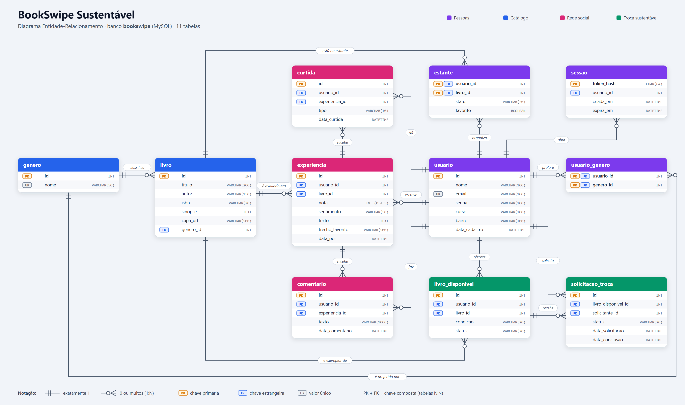
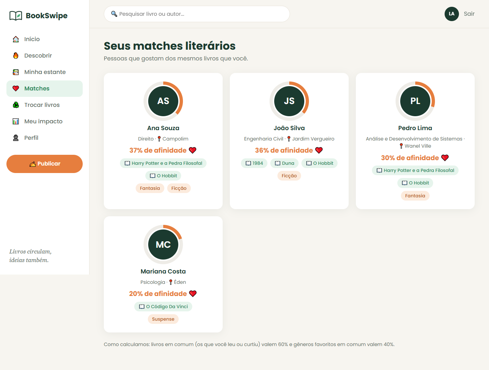
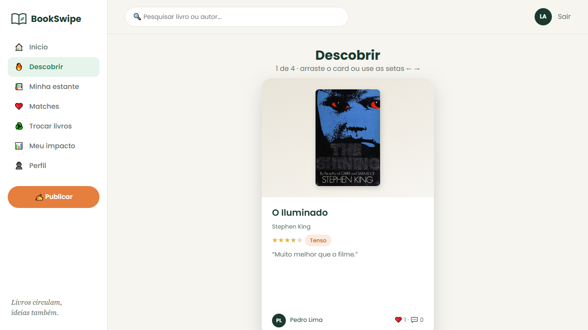
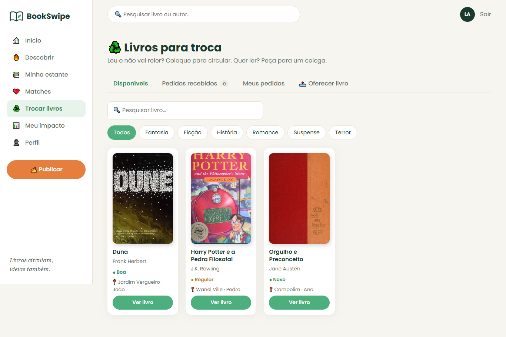
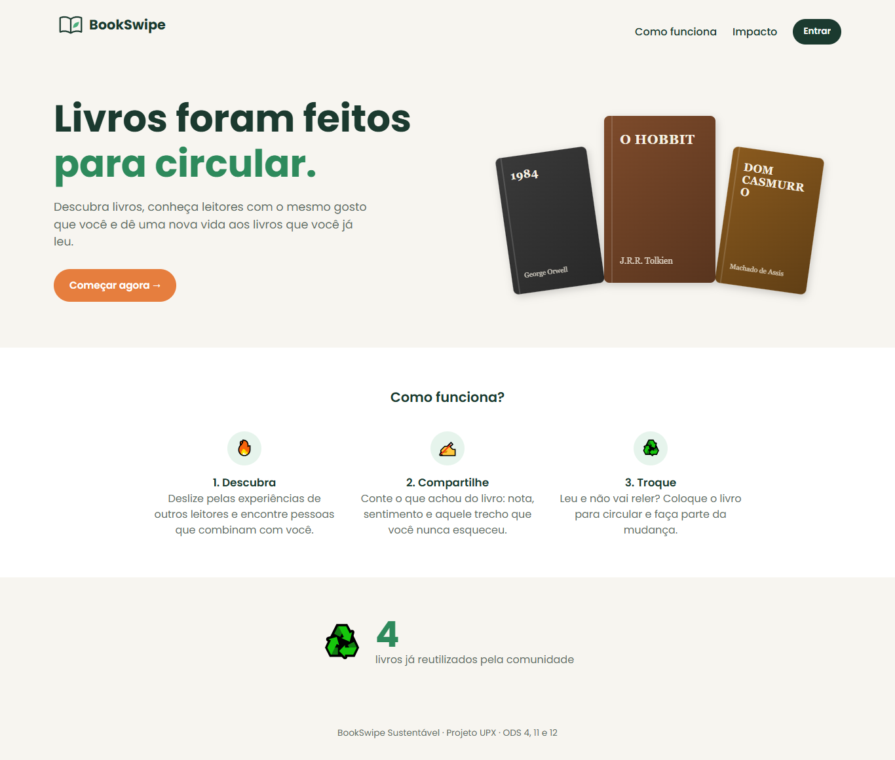
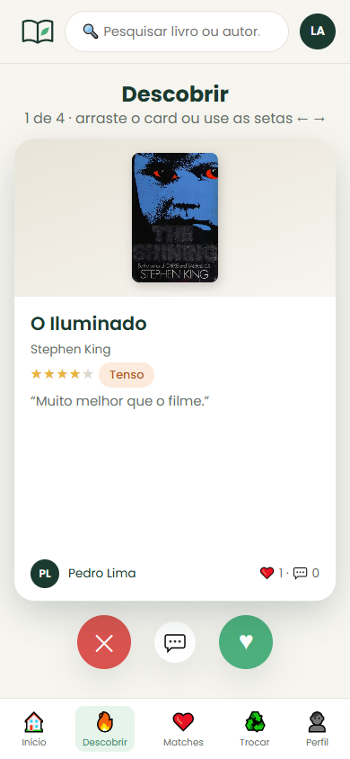
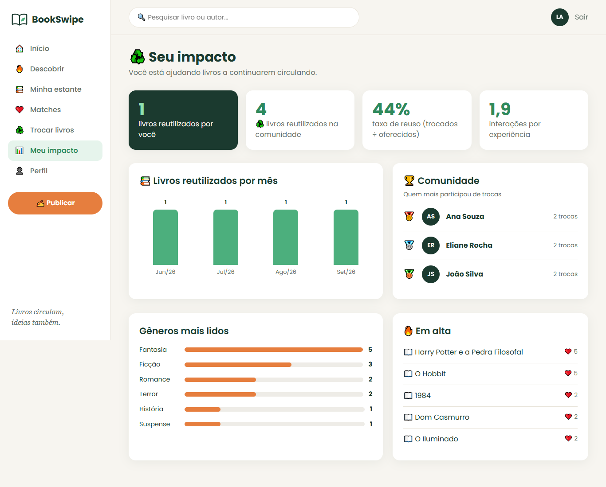

1. Introdução
Quem gosta de ler conhece a cena: o livro é lido uma vez e fica parado na estante, enquanto um colega da mesma faculdade gostaria de lê-lo. Além disso, não existe no campus um espaço digital para descobrir leituras e conversar sobre elas. O BookSwipe Sustentável une uma rede social de experiências de leitura, no estilo “swipe”, a um módulo de troca de livros físicos entre estudantes, dando novo uso a exemplares esquecidos.
2. Objetivos
Geral: desenvolver uma plataforma que conecte estudantes por meio de experiências de leitura e incentive a troca física de livros, medindo o reuso.
- publicar experiências com nota, sentimento, resenha e trecho favorito;
- curtir, comentar e calcular o “match” por afinidade literária;
- oferecer, solicitar e concluir trocas de livros;
- exibir indicadores de reuso e engajamento.
3. Metodologia
O sistema foi dividido em camadas, com Programação Orientada a Objetos em Java. O banco MySQL foi modelado à mão (SQL escrito pelo grupo, 11 tabelas) e acessado via JDBC. A mesma lógica atende ao menu de console e à API REST (Javalin), consumida pelo site em HTML, CSS e JavaScript. Os dados dos livros vêm da API pública Open Library.
HTML/CSS/JS
Javalin
regras
JDBC
11 tabelas
Fonte: autoria própria (2026).

Fonte: autoria própria (2026).
4. Match por afinidade
A afinidade entre dois leitores usa o índice de Jaccard (itens em comum ÷ itens no total): livros em comum (lidos ou favoritos) valem 60% e gêneros favoritos em comum valem 40%. A fórmula é simples, explicável e aparece na própria tela.

Fonte: autoria própria (2026).
5. Resultados: o sistema
O MVP está funcionando: cadastro com senha protegida por hash e token de sessão, feed de experiências com swipe, comentários, estante, matches, marketplace de trocas com regras de negócio no servidor e painel de impacto. O site também funciona no celular.

Fonte: autoria própria (2026).

Fonte: autoria própria (2026).

Fonte: autoria própria (2026).

Fonte: autoria própria (2026).
6. Indicadores de impacto
| Indicador (dados de teste) | Valor |
|---|---|
| Livros reutilizados (trocas concluídas) | 4 |
| Taxa de reuso (trocados ÷ oferecidos) | 44% |
| Engajamento (interações por experiência) | 1,9 |
Fonte: autoria própria, banco de dados de teste (2026).

Fonte: autoria própria (2026).
7. Considerações finais
O BookSwipe mostra que é possível juntar leitura, convívio e sustentabilidade em uma ferramenta simples, construída com o conteúdo do curso. Como próximos passos estão o teste de usabilidade com alunos e com a biblioteca, notificações de pedidos de troca e a implantação para uso real no campus.
Referências
INSTITUTO PRÓ-LIVRO. Retratos da Leitura no Brasil. 6. ed. São Paulo: IPL, 2024.
ONU BRASIL. Objetivos de Desenvolvimento Sustentável. Disponível em: https://brasil.un.org/pt-br/sdgs. Acesso em: 15 out. 2026.
INTERNET ARCHIVE. Open Library APIs. Disponível em: https://openlibrary.org/developers/api. Acesso em: 15 out. 2026.
JAVALIN. Documentation. Disponível em: https://javalin.io/documentation. Acesso em: 15 out. 2026.